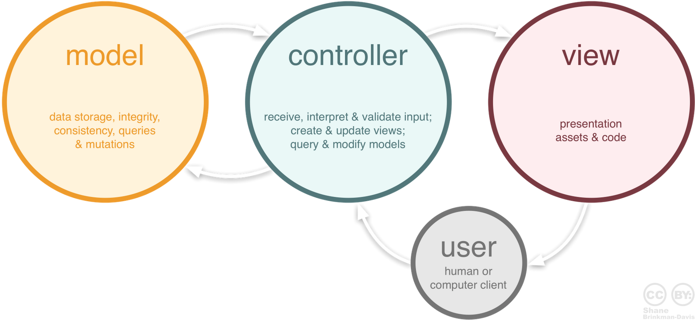

Struts 2 MVC
What?
- Free open- source solution for creating Java web applications
- Based on Java Servlets and JSP technologies
- Action Based Framework
- Create web application using MVC architecture
Why ?
- Free to develop & deploy - open source
- Stable & Mature
- Many supported third-party tools
- Feature-rich
- Flexible & Extendable
- Large User Community
- Easy plug-in
- Ajax support
Struts 2 framework features
- POJO forms and POJO actions
- Action based framework
- Model 2 - MVC Implementation
- Internationalization(I18N) Support
- Rich JSP Tag Libraries
- Annotation and XML configuration options
- Easy to test and debug
MVC Component
Model
- Implement by action class
- For model you can use any data access technologies like JDBC, EJB, Hibernate
View
- Its your result part. It can be JSP, JSTL, JSF etc.
- Presentation part of the MVC
Controller
- FilterDispatcher
- First component that start processing that is why this type of MVC is called front controller MVC
- Looks at the request and apply the appropriate action
- Struts framework handles all of the controller work
- Its configured in web.xml
- Interceptors
- Can execute code before and after an Action is executed
- They can be configured per action basis
- Can be used for data validation, file upload, double submit guards
Request Lifecycle in Struts 2
Request Lifecycle Detail
- Request is generated by user and sent to Servlet container
- Servlet container invokes FilterDispatcher filter which in turn determines appropriate action
- Intercetors are applied before calling the Action
- Action is executed and the Result is generated by Action
- The output of Action is rendered in the view (JSP, Velocity, etc) and the result is returned to the user
Request Lifecycle in Struts 2 MVC

Request Lifecycle Detail
- User sends a request to the server for requesting for some resource (i.e pages).
- The FilterDispatcher looks at the request and then determines the appropriate Action.
- Configured interceptors functionalities applies such as validation, file upload etc.
- Selected action is executed to perform the requested operation.
- Again, configured interceptors are applied to do any post-processing if required.
- Finally the result is prepared by the view and returns the result to the user.
Struts Workflow

Architecture in details
- The normal lifecycle of struts begins when the request is sent from client. This request is passed to filter dispatcher by web container.
- The Filter Dispatcher filter is called which consults the ActionMapper to determine whether an Action should be invoked.
- If ActionMapper finds an Action to be invoked, the Filter Dispatcher delegates control to ActionProxy.
- ActionProxy reads the configuration file such as struts.xml. ActionProxy creates an instance of ActionInvocation class and delegates the control.
Architecture in details(cont.)
- ActionInvocation is responsible for command pattern implementation. It invokes the Interceptors one by one (if required) and then invoke the Action.
- Once the Action returns, the ActionInvocation is responsible for looking up the proper result associated with the Action result code mapped in struts.xml.
- The Interceptors are executed again in reverse order and the response is returned to the Filter (In most cases to FilterDispatcher). And the result is then sent to the servlet container which in turns send it back to client.
Struts Core Component
- Actions
- Results / Result types
- Interceptors
Actions
- POJO class which has String execute() method
- Action Mapping maps an identifier to action class
- Mapping also specifies
- Set of Result Types
- Set of Exception Handlers
- An Interceptor Stack
- Action can chain one to one
- Action can be configured by xml configuration or annotation
Action Example
public class HelloWorldAction extends ActionSupport{
private String name;
public String execute() throws Exception {
if ("SECRET".equals(name))
{
return SUCCESS;
}else{
return ERROR;
}
}
public String getName() {
return name;
}
public void setName(String name) {
this.name = name;
}
}
Action configuration
/HelloWorld.jsp
/AccessDenied.jsp
/Something.jsp
/AccessDenied.jsp
Wildcard Mapping
/Login.jsp
Welcome
MainMenu
ChangePassword
- Login action
- Login_input -> /Login.jsp
- Login_cancel -> redirect to Welcome action
- Login_expired -> chain to ChangePassword action
- Exception mapping
Action config by annotation
@Results({
@Result(name="failure", location="fail.jsp")
})
public class HelloWorld extends ActionSupport {
@Action(value="/different/url", results={@Result(name="success", location="/hello.jsp", type="redirect")})
public String execute() { return SUCCESS; }
@Actions({
@Action("/different/url"),
@Action("/another/url")
})
public String doSomething() { return SUCCESS; }
}
Results
- When an Action class method completes, it return a String
- The value of String is used to select a result element
- An action mapping will often have a set of results representing different possible outcomes
- There are predefined result names (tokens)
- Applications can define other result names (tokens) to match specific cases
Results(cont.)
- xml
Result is configured by
Login_input
- Annotation
@Result(name = "list", value = "listPeople.action", type = ServletRedirectResult. class)
Pre-defined result names (tokens)
- String SUCCESS = "success";
- String NONE = "none";
- String ERROR = "error";
- String INPUT = "input";
- String LOGIN = "login";
Result types
- All the result of Action.These are:
- ServletDispatcherResult(default)
- ServletRedirectResult
- StreamResult
- JasperReportsResult from jasper-report-plugin
- FreeMarkerResult
- ChartResult
- and so on….
Result types Example
Interceptors
- Interceptor is the filter for Action
- Called before/after your action
- Providing preprocessing logic before the action is called
- Providing postprocessing logic after the action is called
- Catching exceptions so that alternate processing can be performed
Interceptors (cont.)
- Struts 2 framework provides interceptors that come preconfigured and ready to use
- Debugging
- Exception mapping
- File upload
- Token generator and validator
- Security checker
- etc..
Configuration
To use Interceptor
- by xml configuration
/HelloWorld.jsp
- by Annotation
@InterceptorRef(value="MyInterceptor")
Plugins
- Almost all is based on Interceptor
- Some of these is based on Result
- These plugins is configured by struts.xml
Bundled Plugins
- JSF
- REST
- Spring
- Tiles
- JasperReports
- JFreeChart
- Etc.
Struts 2 Configuration Files
- web.xml
- /WEB-INF/
- Web deployment descriptor to include all necessary framework components
- struts.xml
- /WEB-INF/classes/
- Main configuration, contains result/view types, action mappings, interceptors, etc.
Struts 2 Hello World
Create web application with Maven
mvn archetype:generate
-DarchetypeGroupId=org.apache.maven.archetypes
-DarchetypeArtifactId=maven-archetype-webapp
-DgroupId=com.aug -DartifactId=augwebapp
Or clone hellospring from github
https://github.com/grandek/strutsblank.git
Add struts2-core in pom.xml
<dependency>
<groupId>org.apache.struts</groupId>
<artifactId>struts2-core</artifactId>
<version>2.3.16.3</version>
</dependency>
Convert to Eclipse project
mvn eclipse:eclipse -Dwtpversion=2.0
sample.jsp
<%@ page contentType="text/html; charset=UTF-8"%>
<%@ taglib prefix="s" uri="/struts-tags"%>
<html>
<head></head>
<body>
<h1>Welcome to Struts2</h1>
<s:form action="hello">
<s:textfield name="name" label="Name" />
<s:submit />
</s:form>
</body>
</html>
hello.jsp
<%@ page contentType="text/html; charset=UTF-8"%>
<%@ taglib prefix="s" uri="/struts-tags"%>
<html>
<head></head>
<body>
<h1>Welcome to Struts2</h1>
<h4>Hello <s:property value="name"/> !! </h4>
</body>
</html>
Action class
public class HelloAction{
private String name;
public String getName() {
return name;
}
public void setName(String name) {
this.username = name;
}
public String execute() {
return "success";
}
}
struts.xml
<?xml version="1.0" encoding="UTF-8" ?>
<!DOCTYPE struts PUBLIC
"-//Apache Software Foundation//DTD Struts Configuration 2.0//EN"
"http://struts.apache.org/dtds/struts-2.0.dtd">
<struts>
<constant name="struts.devMode" value="true" />
<constant name="struts.convention.default.parent.package" value="default"/>
<package name="default" namespace="/" extends="struts-default">
<action name="sample">
<result>pages/sample.jsp</result>
</action>
<action name="hello" class="com.aug.augwebapp.actions.HelloAction">
<result name="input">pages/sample.jsp</result>
<result name="success">pages/hello.jsp</result>
</action>
</package>
</struts>
web.xml
<?xml version="1.0" encoding="UTF-8"?>
<web-app xmlns:xsi="http://www.w3.org/2001/XMLSchema-instance"
xmlns="http://java.sun.com/xml/ns/javaee" xmlns:web="http://java.sun.com/xml/ns/javaee/web-app_2_5.xsd"
xsi:schemaLocation="http://java.sun.com/xml/ns/javaee http://java.sun.com/xml/ns/javaee/web-app_2_5.xsd"
id="WebApp_ID" version="2.5">
<display-name>Welcome to Struts2</display-name>
<filter>
<filter-name>struts2</filter-name>
<filter-class>org.apache.struts2.dispatcher.ng.filter.StrutsPrepareAndExecuteFilter</filter-class>
</filter>
<filter-mapping>
<filter-name>struts2</filter-name>
<url-pattern>/*</url-pattern>
</filter-mapping>
</web-app>
Action Exercise
- Create login page with
- UserName -Not null & length > 2
- Password - Not null & length >= 6
- Welcome page
- display Welcome + username
Validation
Assist the application to run the rules to perform validation before the action method is executed.
To use Validation in Action Class
Add a method validate() in ActionClass
public void validate(){
if (name == null || name.trim().equals("")){
addFieldError("name","The name is required.");
}
if (name != null && (name.length() < 2 || name.length() > 8)){
addFieldError("name","Name must be length max 2 - 8 character.");
}
}
Defining Validation Rules XML
- Per Action class:
- in a file named <ActionName>-validation.xml
- Per Action alias:
- in a file named <ActionName-alias>-validation.xml
- Inheritance hierarchy and interfaces implementd by Action class
To use Validation XML
Add validate="true" to form action
<%@ page contentType="text/html; charset=UTF-8"%>
<%@ taglib prefix="s" uri="/struts-tags"%>
<html>
<head></head>
<body>
<h1>Welcome to Struts2</h1>
<s:form action="hello" validate = "true">
<s:textfield name="name" label="Name" />
<s:submit />
</s:form>
</body>
</html>
To use Validation XML(cont)
Create HelloAction-validation.xml
<!DOCTYPE validators PUBLIC "-//Apache Struts//XWork Validator 1.0.3//EN"
"http://struts.apache.org/dtds/xwork-validator-1.0.3.dtd">
The name is required.
<param name="minLength">2</param>
<param name="maxLength">8</param>
Name must be length 2 - 8 character.
Validation Exercise
- Add validation
- UserName - not null ,length 2 - 8 character
- Password - length 6 - 12 characters
Interceptor
Create MyInterceptor
public class MyLoggingInterceptor extends AbstractInterceptor {
public String intercept(ActionInvocation invocation)throws Exception{
String className = invocation.getAction().getClass().getName();
long startTime = System.currentTimeMillis();
System.out.println("Before calling action: " + className);
String result = invocation.invoke();
long endTime = System.currentTimeMillis();
System.out.println("After calling action: " + className
+ " Time taken: " + (endTime - startTime) + " ms");
return result;
}
}
configuration
struts.xml
<interceptor name="mylogging" class="th.co.augmentis.interceptor.MyLoggingInterceptor" />
<interceptor-ref name="mylogging"/>
<interceptor-ref name="defaultStack"/>
To use Interceptor
- by xml configuration
/HelloWorld.jsp
- by Annotation
@InterceptorRef(value="MyInterceptor")
Tiles
Common layout of website is defined in a central configuration file for all the webpages
Application Layout
Our goal is to add Header, Footer and Menu to our application
Add struts2-tiles-plugin in pom.xml
org.apache.struts
struts2-tiles-plugin
2.3.16.3
Create Tiles
- Add "/webapp/tiles" Folder contains file
- BaseLayout.jsp
- Header.jsp
- Menu.jsp
- Footer.jsp
Create Tiles(cont.)
Header.jsp
Hello Struts Header
Menu.jsp
<%@ page contentType="text/html; charset=UTF-8"%>
<%@ taglib prefix="s" uri="/struts-tags"%>
Login
Footer.jsp
Copyright © augmentis.co.th
Create Tiles(cont.)
BaseLayout.jsp
<%@ taglib uri="http://tiles.apache.org/tags-tiles" prefix="tiles"%>
<!DOCTYPE HTML PUBLIC "-//W3C//DTD HTML 4.01 Transitional//EN"
"http://www.w3.org/TR/html4/loose.dtd">
<html>
<head>
<meta http-equiv="Content-Type" content="text/html; charset=UTF-8">
<title><tiles:insertAttribute name="title" ignore="true" /></title>
</head>
<body>
<table width="100%" border="1" cellpadding="2" cellspacing="2" align="center">
<tr>
<td height="30" colspan="2"><tiles:insertAttribute name="header" /></td>
</tr><tr>
<td height="250"><tiles:insertAttribute name="menu" /></td>
<td><tiles:insertAttribute name="body" /></td>
</tr><tr>
<td height="30" colspan="2"><tiles:insertAttribute name="footer" /></td>
</tr>
</table>
</body>
</html>
Create tiles.xml
Add tiles.xml to /WEF-INF/tiles.xml
<!DOCTYPE tiles-definitions PUBLIC
"-//Apache Software Foundation//DTD Tiles Configuration 2.0//EN"
"http://tiles.apache.org/dtds/tiles-config_2_0.dtd">
<tiles-definitions>
<definition name="baseLayout" template="/tiles/BaseLayout.jsp">
<put-attribute name="title" value="" />
<put-attribute name="header" value="/tiles/Header.jsp" />
<put-attribute name="menu" value="/tiles/Menu.jsp" />
<put-attribute name="body" value="" />
<put-attribute name="footer" value="/tiles/Footer.jsp" />
</definition>
<definition name="/hello.tiles" extends="baseLayout">
<put-attribute name="title" value="Hello" />
<put-attribute name="body" value="/pages/hello.jsp" />
</definition>
</tiles-definitions>
Modify struts.xml
Add type="tiles" result type
Change hello.jsp to /hello.tiles
pages/sample.jsp
/hello.tiles
Modify web.xml
Add Tiles listener to web.xml
org.apache.struts2.tiles.StrutsTilesListener
org.apache.tiles.impl.BasicTilesContainer.DEFINITIONS_CONFIG
/WEB-INF/tiles.xml
Tiles Exercise
- Apply tiles to all webpages
- login.jsp
- hello.jsp
- welcome.jsp
Struts 2 Annotation
- Scanning Methodology - "struts, struts2, action or actions"
- Naming Converter
- Remove the “Action” word at the end of the file name, if present.
- Convert the first letter of the file name to lowercase.
Scanning Methodology
Modify struts2 filter in web.xml
<filter>
<filter-name>struts2</filter-name>
<filter-class> org.apache.struts2.dispatcher.ng.filter.StrutsPrepareAndExecuteFilter</filter-class>
<init-param>
<param-name>actionPackages</param-name>
<param-value>th.co.augmentis.actions</param-value>
</init-param>
</filter>
Let's go to Annotation
- Add dependency "struts2-convention-plugin" with version "2.3.16.3"
org.apache.struts
struts2-convention-plugin
2.3.16.3
Create a LoginAction extends ActionSupport
XML
pages/login.jsp
Annotation version
@Namespace("/")
@ResultPath(value="/")
@Result(name="success",location="pages/login.jsp")
public class LoginAction extends ActionSupport {
}
Change HelloAction to Annotation config
XML
pages/sample.jsp
pages/welcome.jsp
Annotation version
@Namespace("/")
@ResultPath(value="/")
@InterceptorRefs(value={
@InterceptorRef(value="mylogging"), @InterceptorRef(value="defaultStack")
})
public class HelloAction extends ActionSupport{
private String name;
public String getName() {return name;}
public void setName(String name) {this.name = name;}
@Action(value="hello", results={
@Result(name="input", location="pages/sample.jsp"),
@Result(name="success", location="/hello.tiles" ,type="tiles")
})
public String execute() { return "success";}
}
Annotation Exercise
- Change action configuration to Annotation
Message Resource
- Message resources provide a simple way to put text in a view page
- to create form field labels
- and to change text to a specific language based on the user's locale (i18n).
Message Resource(cont.)
When you reference a message element by its key
Struts framework searches for a corresponding message bundle in the following order:
- ActionClass.properties
- Interface.properties
- SuperClass.properties
- model.properties
- package.properties
- struts.properties
- global.properties
Configuration
Modify struts.xml
<constant name="struts.custom.i18n.resources" value="propertiesName1,propertitesName2.." />
Display the resource message?
View Example
<s:textfield key="global.username" name="username" />
<s:text name="global.username" />
<s:property value="getText('global.username')" />
<s:text name="global.password" />
<message key="password.mismatch">Password mismatch</message>
Action Example
public class LoginAction extends ActionSupport{
...
public void validate(){
if("".equals(getUsername())){
addFieldError("username", getText("username.required"));
}
}
}
Exercise
- Applies Message Resource to Web Project
- login.jsp
- hello.jsp
- welcome.jsp
- Applies Message Resource to Validation
i18n or localization configuration
Parameters of i18n interceptor
- parameterName It specifies the name of the HTTP request parameter. It is set to request_locale bydefault.
- attributeName specifies the name of the session key to store the locale. It is WW_TRANS_I18N_LOCALE bydefault.
i18n tag
This i18n tag can get the message from a specified resource bundle that declared in the “name” attribute
i18n or localization Exercise
- Create link to switch language
- Thai (th)
- English(en)
Struts 2 and Hibernate Integration
Add Maven Dependency
org.hibernate
hibernate-core
4.3.8.Final
org.hibernate.common
hibernate-commons-annotations
4.0.4.Final
mysql
mysql-connector-java
5.1.34
runtime
Create Hibernate Entity
Maven Dependency Management
4.3.8.Final
org.hibernate
hibernate-core
${hibernate.version}
Exclude Maven Dependency
com.trainning
Hibernate-Blank
1.0
org.hibernate
hibernate-annotations
org.hibernate.common
hibernate-commons-annotations
org.hibernate
ejb3-persistence
Setting hibernate.cfg.xml
org.hibernate.dialect.MySQLDialect
jdbc:mysql://localhost:3306/dbName
root
yourPassword
com.mysql.jdbc.Driver
<mapping class="you.entity.class"/>
Modify Action Method
private SessionFactory sessionFactory;
List<Entity> entitys = new ArrayList<Entity>();
public List<Entity> getEnties() {
Session session = getSesstionFactory().openSession();
entitys = session.createQuery("from Entity").list();
session.close();
sessionFactory.close();
return entitys;
}
private SessionFactory getSesstionFactory(){
Configuration configuration = new Configuration().configure();
ServiceRegistry serviceRegistry = new StandardServiceRegistryBuilder()
.applySettings(configuration.getProperties()).build();
sessionFactory = configuration.configure().buildSessionFactory(serviceRegistry);
return sessionFactory;
}
Modify Hello.jsp
<table>
<thead>
<tr>
<th>Name</th>
<th>Price</th>
</tr>
</thead>
<tbody>
<s:iterator value="products"var="product">
<tr>
<td><s:property value="productName"/></td>
<td><s:property value="price"/></td>
</tr>
</s:iterator>
</tbody>
</table>
Exercise
- Create Hibernate CRUD
- Show List of Entity